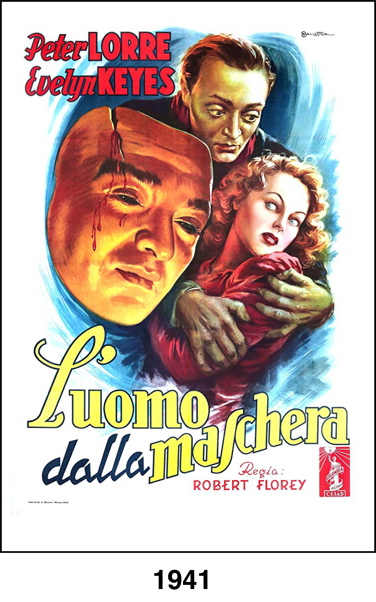
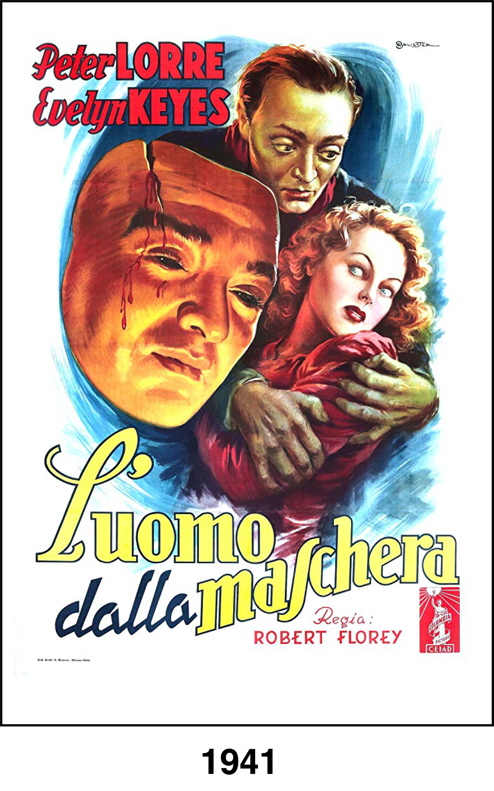

Hungarian immigrant Janos Szabo (Peter Lorre) is left disfigured after a fire. When his scarred appearance keeps him from finding employment, Janos teams up with thieves Watts (John Tyrrell) and Benson (Al Seymour), who value his safe-cracking abilities, and saves his share of every robbery for plastic surgery. Janos meets Helen Williams (Evelyn Keyes), a blind woman, and falls in love. He decides to end his criminal career, but the gang suspects he may double-cross them.